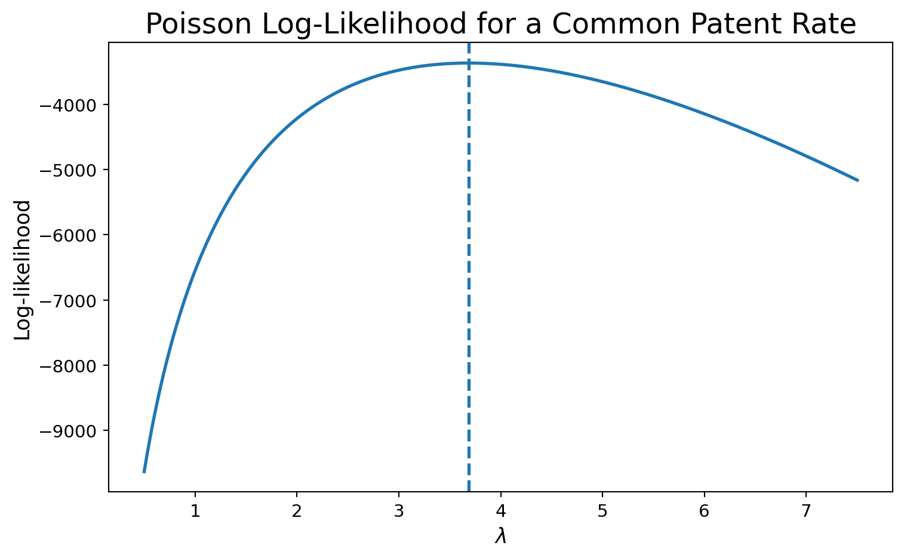
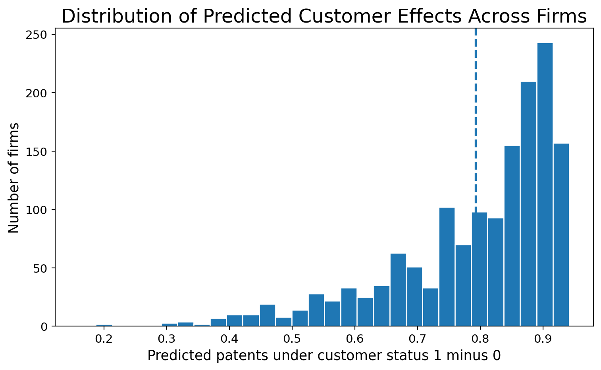

Poisson Regression and Maximum Likelihood Estimation
A Case Study of Blueprinty’s Software and Patent Awards
Author
Zeyu Fang
Published
May 17, 2001
Introduction
Blueprinty is a small software company that helps engineering firms prepare technical blueprints for patent applications submitted to the U.S. Patent Office. Its marketing team would like to make a strong business claim: firms using Blueprinty’s software appear to receive more patents, so perhaps the software helps customers get more patent applications approved.
That is an interesting claim, but it is not easy to evaluate. In an ideal world, we would observe the same firms before and after adopting Blueprinty’s software and compare their patent success rates over time. No such panel data are available. Instead, Blueprinty has assembled a cross-sectional dataset on 1,500 mature engineering firms. For each firm, the data record the number of patents awarded over the last five years, the firm’s region, its age since incorporation, and whether it is a Blueprinty customer.
The challenge is that Blueprinty’s customers are not randomly assigned. If customers and non-customers differ systematically in age, geography, or other factors related to innovation, then a raw difference in patent counts may not reflect the effect of the software itself. The goal of this post is therefore twofold: first, to show how maximum likelihood estimation works in a Poisson model for count data; and second, to use Poisson regression to estimate how Blueprinty customer status is associated with patent output after controlling for observable firm characteristics.
Exploring the Data
import numpy as npimport pandas as pdimport matplotlib.pyplot as pltfrom scipy.optimize import minimizefrom scipy.special import gammalnimport statsmodels.api as smimport statsmodels.formula.api as smfplt.rcParams["figure.figsize"] = (8, 5)plt.rcParams["axes.titlesize"] =18plt.rcParams["axes.labelsize"] =13plt.rcParams["xtick.labelsize"] =11plt.rcParams["ytick.labelsize"] =11df = pd.read_csv("../../blueprinty.csv")df.head()
patents
region
age
iscustomer
0
0
Midwest
32.5
0
1
3
Southwest
37.5
0
2
4
Northwest
27.0
1
3
3
Northeast
24.5
0
4
3
Southwest
37.0
0
The dataset contains one row per firm. The outcome variable is patents, the number of patents awarded over the last five years. The key explanatory variable is iscustomer, which equals 1 for Blueprinty customers and 0 otherwise.
Customers average about 4.13 patents over the past five years, compared with about 3.47 for non-customers. The histograms tell the same story visually: the customer distribution is shifted somewhat to the right. At first glance that seems favorable to Blueprinty’s marketing claim, but this raw comparison is not yet persuasive evidence of a software effect. Customers may differ from non-customers in other ways that also predict patenting.
Region differs sharply by customer status. Blueprinty customers are heavily concentrated in the Northeast, while non-customers are much more spread out across the five regions. That matters because if innovative firms cluster geographically, a simple customer-versus-non-customer comparison will partially confound customer status with regional business conditions.
The age distributions are broadly similar, but customers are slightly older on average. That also matters because older firms may have had more time to accumulate organizational know-how, R&D capability, and legal experience with the patent process. Taken together, the region and age comparisons show why this is a non-trivial observational problem: the two groups are not exchangeable, so we need a model that conditions on observable differences.
A Simple Poisson Model via Maximum Likelihood
The number of patents is a count, so a Poisson model is a natural starting point. Patent counts cannot be negative, they take integer values, and the histogram shows a right-skewed distribution rather than something approximately Normal. A Poisson model respects those features of the data.
Suppose for the moment that every firm shares the same patent rate \(\lambda\) and that
\[
Y_i \sim \text{Poisson}(\lambda), \qquad i = 1,\dots,n.
\]
For one observation, the probability mass function is
The final term does not depend on \(\lambda\), so the shape of the objective is driven by the tradeoff between the \(-\lambda\) and \(Y_i \log \lambda\) terms.
lambda_grid = np.linspace(0.5, 7.5, 300)ll_values = np.array([poisson_loglikelihood(lam, Y) for lam in lambda_grid])

The peak of the curve identifies the maximum likelihood estimate. Visually, the log-likelihood reaches its highest point very close to the sample mean of the patent counts. That is exactly what the algebra predicts.
If we differentiate the log-likelihood and set it equal to zero,
The numerical optimizer and the sample mean agree almost exactly. That is reassuring because it shows the code, the plot, and the algebra are all pointing to the same answer.
Poisson Regression
The simple Poisson model assumes every firm has the same patent rate \(\lambda\), which is clearly too restrictive. A more realistic model lets the expected patent count vary with firm characteristics:
This is a Poisson regression. The linear index \(X_i'\beta\) can take any real value, but \(\lambda_i\) must be strictly positive, so we map the linear predictor through the exponential function. That keeps predicted patent rates on the positive real line.
Here I model each firm’s patent rate as a function of:
an intercept,
firm age,
age squared,
region indicators (dropping one region as the baseline), and
Blueprinty customer status.
I include age squared because the relationship between firm maturity and patenting is unlikely to be exactly linear. I drop one region because including indicators for all regions together with an intercept would create perfect multicollinearity.
Coding the Poisson regression log-likelihood
df["age_sq"] = df["age"] **2region_dummies = pd.get_dummies(df["region"], drop_first=True)X = pd.concat([ pd.Series(1.0, index=df.index, name="Intercept"), df[["age", "age_sq", "iscustomer"]], region_dummies], axis=1)X = X.astype(float)Y = df["patents"].to_numpy().astype(float)X_mat = X.to_numpy()def poisson_regression_loglikelihood(beta, Y, X): eta = X @ beta mu = np.exp(eta)return np.sum(Y * eta - mu - gammaln(Y +1))def neg_poisson_regression_loglikelihood(beta, Y, X):return-poisson_regression_loglikelihood(beta, Y, X)poisson_regression_loglikelihood(np.zeros(X_mat.shape[1]), Y, X_mat)
The coefficient estimates from the hand-coded MLE and statsmodels match very closely, as they should. The standard errors are also close, though not always identical to the last decimal place. That is normal: the GLM routine uses its own optimization and information-matrix calculations, while my manual implementation relies on the numerical Hessian approximation returned by BFGS.
First, the coefficient on age is positive while the coefficient on age^2 is negative. That combination implies an inverted-U relationship: patenting tends to rise with age at first, but the marginal effect gradually declines as firms become older. That makes economic sense. Younger firms may still be building technical and legal capability, while very mature firms may already be past their most innovative phase.
Second, the regional coefficients are relatively modest once age and customer status are included. In this sample, region matters less than firm maturity and customer status.
Third, the customer coefficient is positive and statistically precise. The estimate is about 0.208, so holding age and region fixed, Blueprinty customers have an expected patent rate that is multiplied by \(e^{0.208} \approx 1.23\). In other words, the model associates customer status with roughly 23% more patents on average, conditional on the included controls.
The Effect of Blueprinty’s Software
In a Poisson model, coefficients are multiplicative, not additive, so the customer coefficient is not directly interpreted as “0.208 additional patents.” A more intuitive quantity comes from counterfactual prediction.
I construct two versions of the covariate matrix:
\(X_0\): everyone is set to iscustomer = 0
\(X_1\): everyone is set to iscustomer = 1
Then I predict the expected patent count for each firm under both scenarios and average the difference.
df0 = df.copy()df1 = df.copy()df0["iscustomer"] =0df1["iscustomer"] =1yhat0 = glm_fit.predict(df0)yhat1 = glm_fit.predict(df1)effect_table = pd.DataFrame({"Quantity": ["Average predicted patents if all firms were non-customers","Average predicted patents if all firms were customers","Average treatment-effect style contrast" ],"Value": [ yhat0.mean(), yhat1.mean(), (yhat1 - yhat0).mean() ]})effect_table.round(4)
Quantity
Value
0
Average predicted patents if all firms were no...
3.4362
1
Average predicted patents if all firms were cu...
4.2290
2
Average treatment-effect style contrast
0.7928

The average contrast is about 0.79 patents over five years. Interpreted carefully, that means the fitted model predicts that if the observed firms were all treated as Blueprinty customers rather than all treated as non-customers—while keeping their ages and regions fixed at their observed values—the average expected patent count would be about 0.79 higher.
That is evidence consistent with Blueprinty’s marketing claim. At the same time, the conclusion should be stated carefully. This is an observational study, not a randomized experiment. Even after controlling for age and region, there may still be unobserved differences between customers and non-customers—such as R&D spending, managerial quality, or legal sophistication—that also affect patenting. So the model supports an association, and perhaps a useful predictive story, but it does not by itself establish a clean causal effect.
Conclusion
This assignment illustrates both the mechanics of maximum likelihood estimation and the practical value of Poisson regression for count data. Starting from the simple Poisson model, the likelihood function makes it clear why the MLE for a common patent rate is just the sample mean. Extending that logic to a regression setting lets expected patent counts vary with firm characteristics in a way that respects the non-negative, integer-valued nature of the data.
Substantively, the analysis suggests that Blueprinty customers tend to have higher patent counts than non-customers, even after conditioning on age and region. The fitted Poisson model implies a sizable positive association: customers have roughly 23% higher expected patent rates, and the average counterfactual contrast is about 0.79 additional patents over five years.
For Blueprinty’s marketing team, that result is encouraging. For a careful analyst, however, the right conclusion is more restrained: the data are certainly consistent with the claim that Blueprinty’s customers are more successful, but because customer status is not randomly assigned, the analysis cannot rule out omitted-variable bias. The model provides useful evidence, not definitive proof.